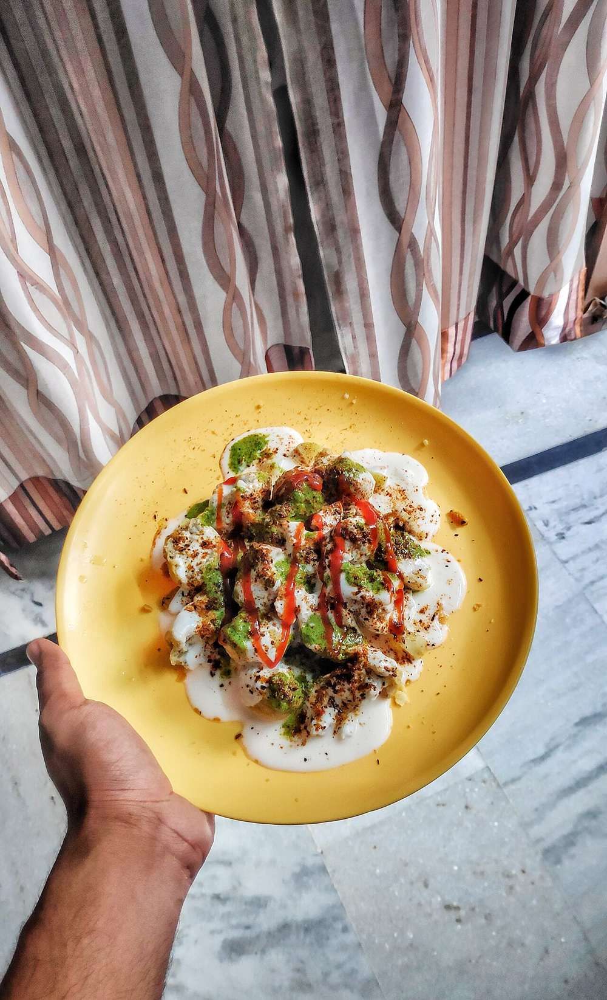

Dahi Bhalla
feather-light urad dal dumplings drowned in sweetened yogurt with tamarind and roasted cumin

Start the day before. The soaking alone is 5 hr, against 55 min of actual work.
Contains: milk
Ingredients
Quantities for 6.
- 200g, soaked 5 hours Urad Dal
- 50g, soaked 5 hours Moong Dalkeeps the bhalle lightoptional
- 2cm, grated Ginger
- 2, finely chopped Green Chilli
- 1/4 tsp Asafoetidause compounded-free hing to keep this gluten-free
- 2 tbsp Raisinsone pressed into each bhallaoptional
- 1/4 tsp Baking Sodaoptional
- 600ml for deep frying Neutral Oil
- 800g, thick and fresh Yogurt
- 3 tbsp, for the yogurt Sugar
- 60g pulp Tamarind
- 60g, grated Jaggery
- 2 tsp, dry-roasted Cumin Powder
- 1.5 tsp Black Salt
- 1 tsp Chilli Powder
- 1 tsp Chaat Masalaoptional
- 3 tbsp, chopped Coriander Leavesoptional
- 2 tbsp leaves Mintoptional
- 4 tbsp seeds Pomegranateoptional
- to taste Salt
- 2 litres, warm, for soaking the fried bhalle Water
Cookware
blender, kadhai, stovetop
Checked against the ingredient list for ten allergens: milk, egg, fish, crustaceans, tree nuts, peanuts, sesame, mustard, soy and gluten. Brands vary, so read the label on anything new to you.
Before you start
- Soak both dals separately for 5 hours. Drain them very well. Wet dal makes a slack batter that drinks oil.
- Grind with as little water as you can get away with, then beat the batter by hand for 5 minutes. Air beaten in now is what makes the bhalle spongy.
- The yogurt should be whisked and chilled at least an hour ahead. Sour yogurt ruins the dish; use it the day you buy it.
- Assemble no more than 30 minutes before serving, or the bhalle collapse.
Method
- Grind the drained dals to a thick, smooth paste with 3-4 tbsp water only. The batter should hold a peak on the spoon.
- Beat the batter hard with your hand or a whisk for 5 minutes, adding the asafoetida, ginger, green chilli, baking soda and salt. Drop a teaspoonful into a bowl of water. It should float within seconds.The float test is the only reliable check. If it sinks, beat for another 3 minutes.
- Heat the oil to 170C. Wet your palm, take a spoon of batter, press a raisin into the centre and slide it in. Fry 5-6 at a time.
- Fry 4-5 minutes, turning, to an even pale gold. Not brown. Drain on paper.Deep brown bhalle stay hard in the middle. Pale gold is correct here.
- Drop the hot bhalle straight into 2 litres of warm salted water and leave them 20 minutes. They will swell and go soft.
- Meanwhile soak the tamarind in 200ml hot water for 15 minutes, squeeze out the pulp, strain, and simmer with the jaggery, 1/2 tsp of the roasted cumin and a pinch of black salt for 8 minutes until it coats a spoon.
- Whisk the yogurt with the sugar and 1/2 tsp salt until it is smooth and pourable, like thin cream. Chill.
- Lift each bhalla out of the water and press it flat between your palms to squeeze out the water. Be firm but do not tear it.Squeezing properly is what lets the yogurt in. A waterlogged bhalla tastes of nothing.
- Arrange the pressed bhalle in a shallow dish and pour the chilled yogurt over to cover. Rest 20 minutes in the fridge.
- Drizzle with the tamarind chutney, then dust with the remaining roasted cumin, black salt, chilli powder and chaat masala.
- Scatter coriander, mint and pomegranate over and serve cold.
Storage
Best within 4 hours of assembly. Fried bhalle keep 3 days refrigerated in their soaking water, or 1 month frozen undressed; the tamarind chutney keeps 3 weeks in the fridge. Dress only at serving time.
Nutrition Good estimate
Medium protein: 15 g a serving, 13% of the calories
| Per serving522 g | Per 100 g | |
|---|---|---|
| Calories | 473 kcal | 91 kcal |
| Protein | 15.1 g | 3 g |
| Carbohydrate | 63.6 g | 12 g |
| of which sugars | 33.7 g | 6 g |
| Fibre | 8.4 g | 2 g |
| Fat | 19.4 g | 4 g |
| of which saturated | 4.5 g | 1 g |
| of which unsaturated | 13.8 g | 3 g |
Nearest database match used for asafoetida, black salt, chaat masala, jaggery, and others. Estimated from raw ingredients using USDA FoodData Central.
More like this: Vegetarian Indian recipes · Gluten-free Indian recipes · No onion no garlic recipes · Punjabi recipes
Times, yields, allergens and nutrition are guidance. Use your own judgement on doneness and on storing. More in About.